Elements
Everything a .dtile document can write, one page each. Each page says what the element makes, shows it, gives an example, and lists every control it takes, generated from the program itself. Further down are its rules and how it is made. New to the language? Start with the guide.
surfaces things and runs plants water bases the document
The document
What a tile file is made of: the tile, its heights, its lines and regions, its stack, and parts brought in from other files.

tilethe tile itself: its name, size and seed, and everything in it
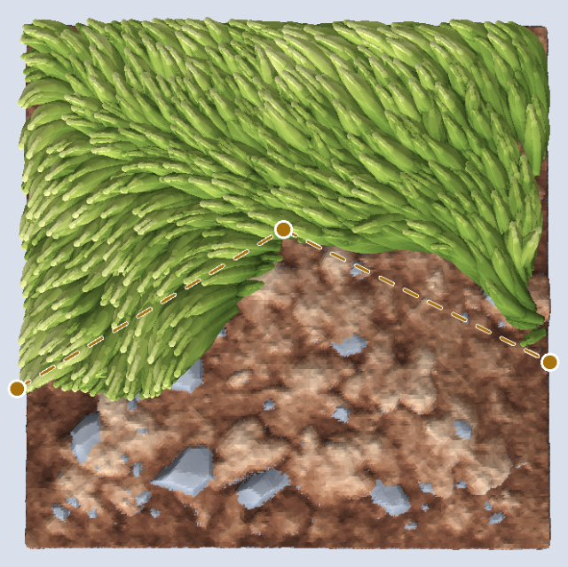
linea line through points, to divide the tile or to build along
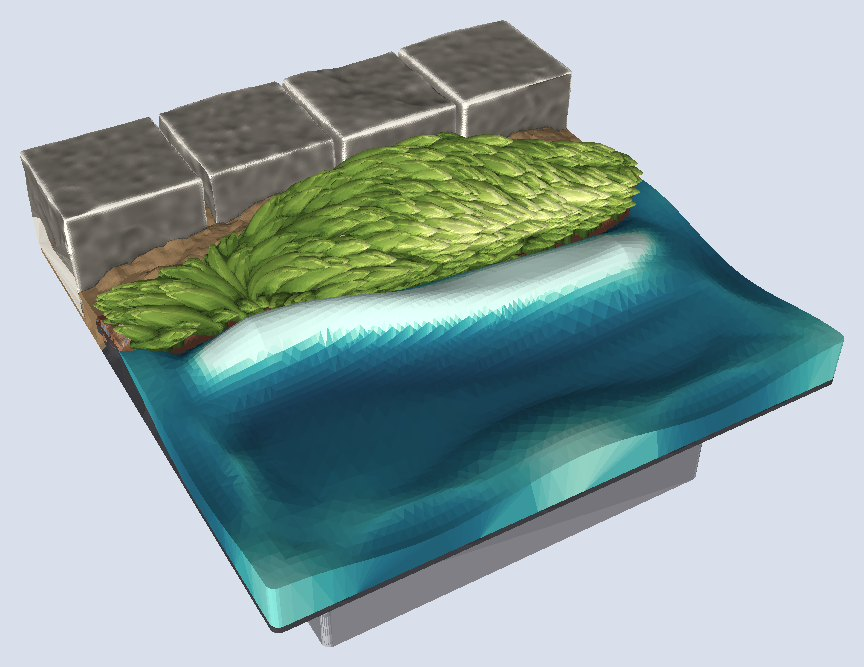
regionan area bounded by lines, chosen by fill points
leta named value; override replaces a $ name
pointa named point, and the built-in points and edges
pinholds a body's top to a height at a place
basethe connector, first in the stack
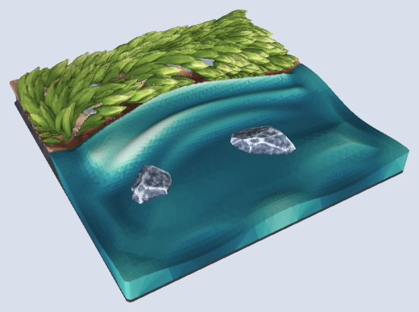
stackthe list of what the tile is made of
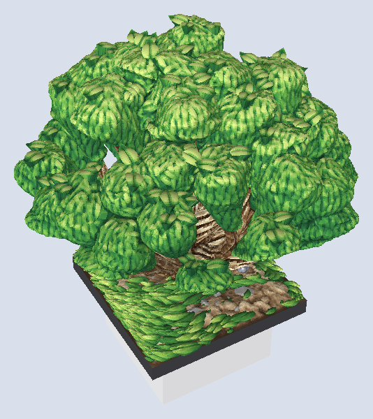
usebrings definitions in from a parts file
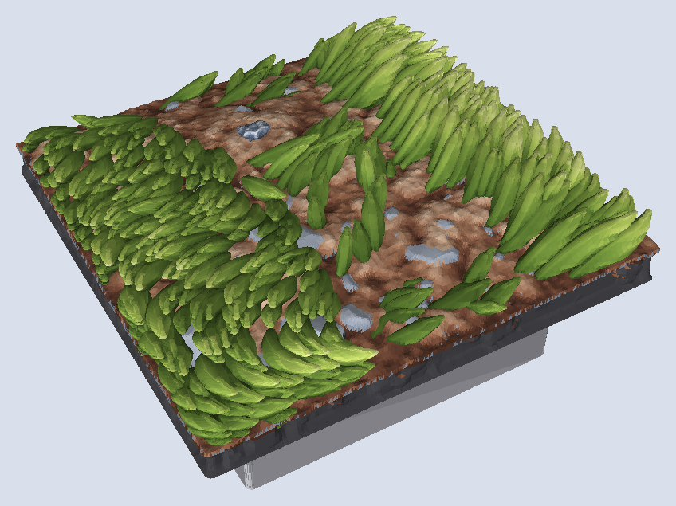
definea named, reusable stack, called like an element; with param
Surfaces
Land is laid bottom up in stack order, each body the higher of what is below it and its own top; water, a fluid, is built where it is listed and fills what is lower than its top over the ground listed above it.

dirttextured earth: clods, grit and half-sunk pebbles

grassseparate sculpted blades in tufts, parting round bare patches
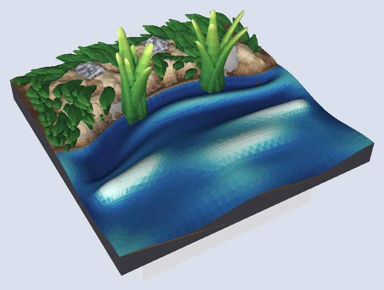
reedsclumps of tapered reeds at the waterline
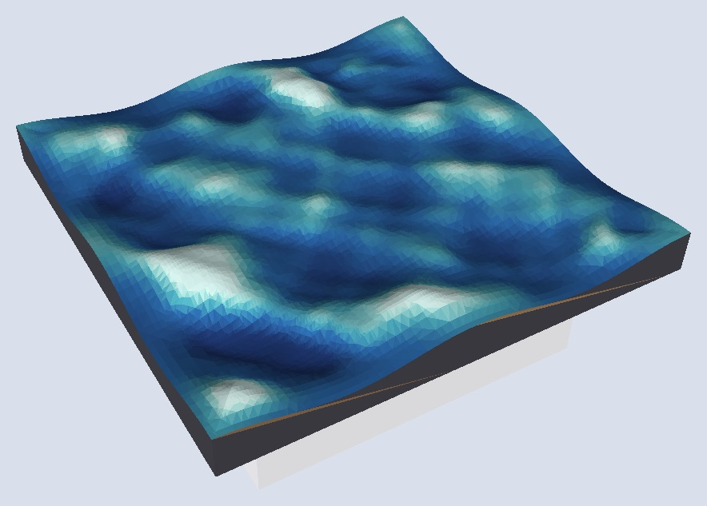
waterstill water with sculpted swells, up to its level
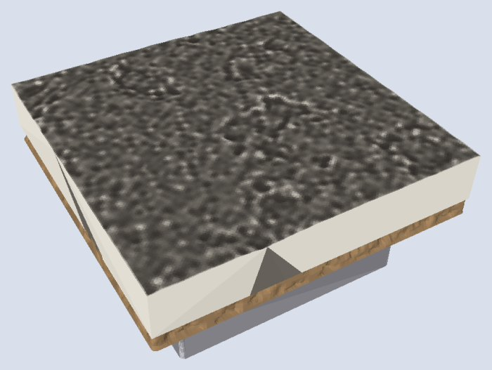
flagstonesa floor of stone slabs, each at its own height and tilt in the floor's band
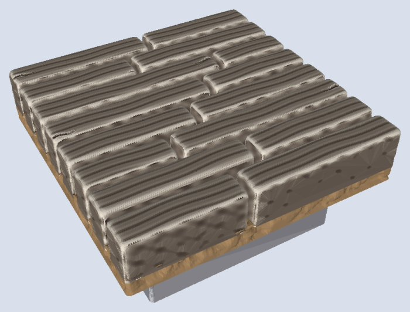
planksa floor of wooden boards with grain and checks
Things
One solid each, standing on the surface. Place one with at=, or many with a scatter.

rockone rock, chiselled and bedded in the ground

stonea rock with stone sizes, about 1–6dmm
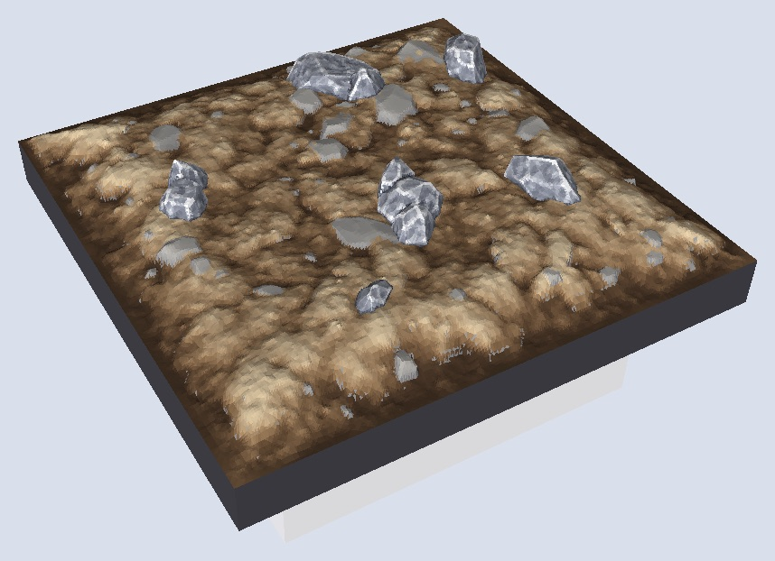
bouldera rock with boulder sizes, about 4.5–8dmm
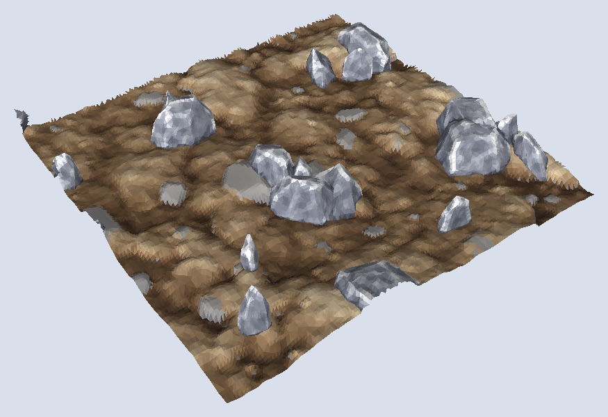
pebblea rock with pebble sizes, about 1–2.2dmm
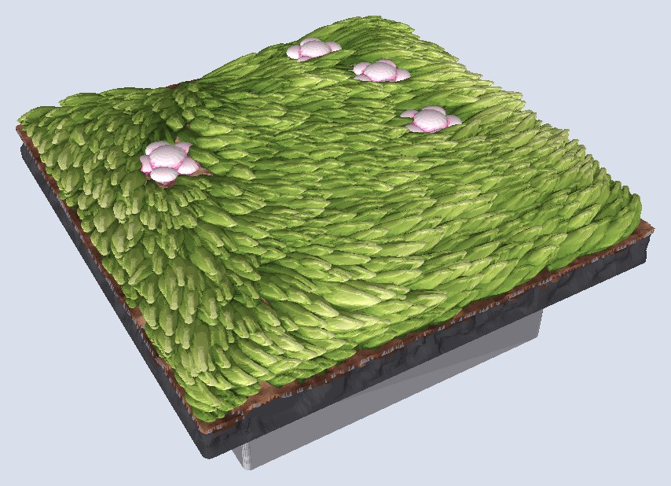
flowerone wildflower: a dome on a column, ringed by petals
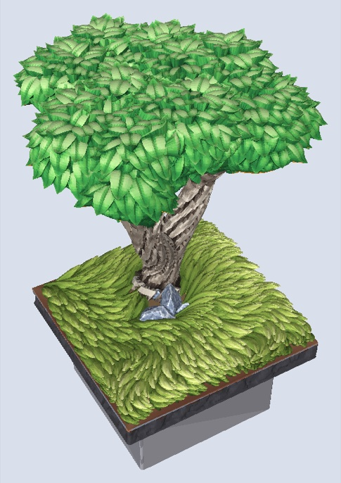
treeone tree: a forking trunk and leafy clumps
Runs
Built along a tile edge or a drawn line. On a tile edge a run always stands inside the tile.
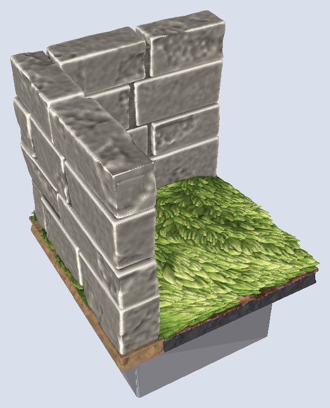
walla masonry wall: cut stone, fieldstone or brick

cliffa storey-high band or mass of stacked rock, in a region and a band
Placement
More than one of a thing: how many, and where.
Bases
Not written in the document: the build adds one, by the system you build for.
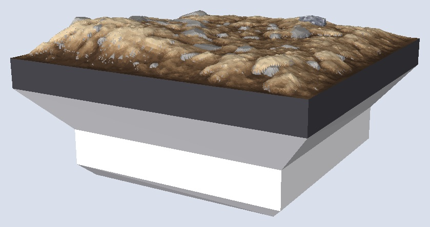
dungeonblocksthe 35 mm socket-peg base (--system db, the default)
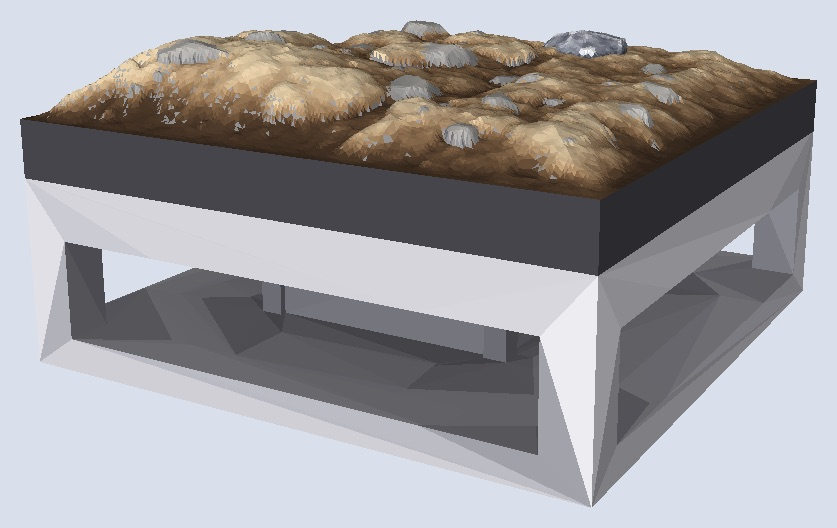
openlockthe 25.4 mm clip base (--system ol)
Library files
Documents that set up the program rather than describe a tile.